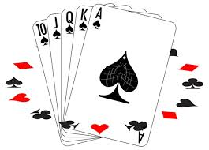

«Дура́к»
«Дура́к» — это карточная игра, в которую играют от 2-х до 6-и человек. Цель игры- по ходу игры скинуть все карты и выйти из игры, последний вышедший становится проигравшим, "дураком". Из-за простых правил игра получила большое распространение в России и странах бывшего СССР.
Масти карт:
- ♠️ — пики
- ♣️ — трефы
- ♥️ — черви
- ♦️ — бубны
Обычно используются атласные карты, колодой по 24, 36 или по 52/54 карты.
Система подкидывания карт: сначала ходит человек, другой отбивается, после человек говорит что нет и передаёт по часовой стрелке право подкидывать, этот человек подкидывает( по желанию ) и передаёт права другому.
Дополнительная информация